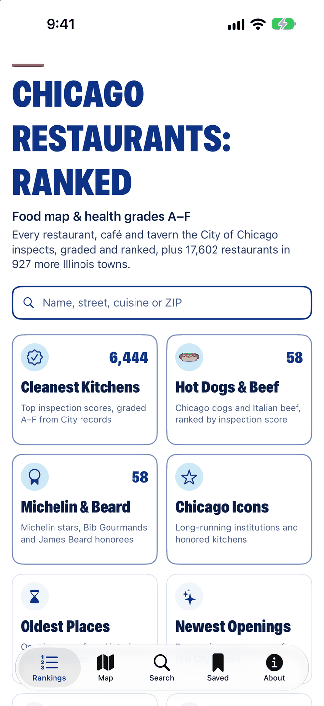
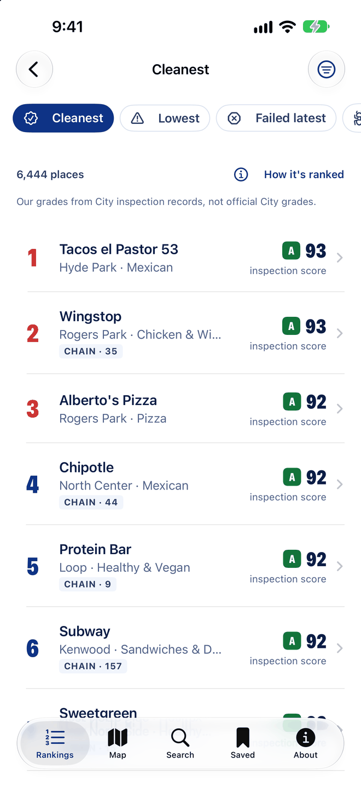
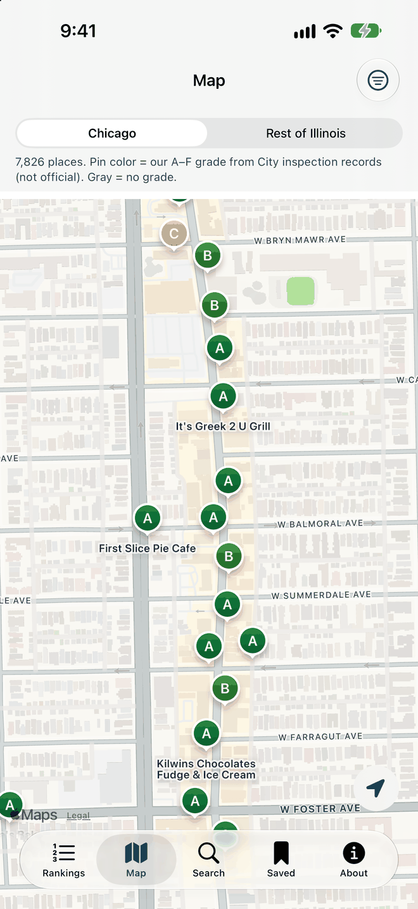
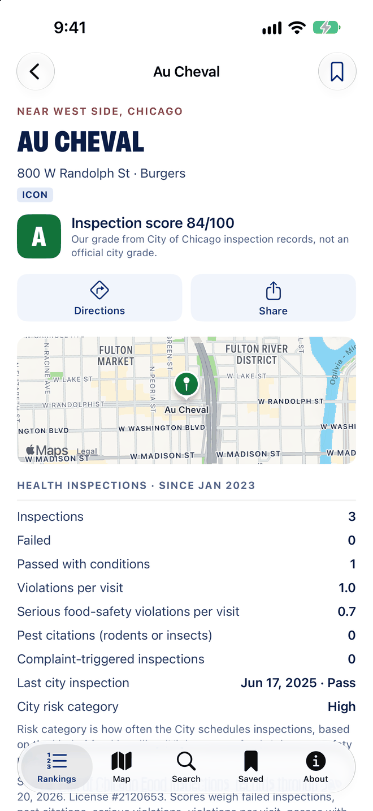
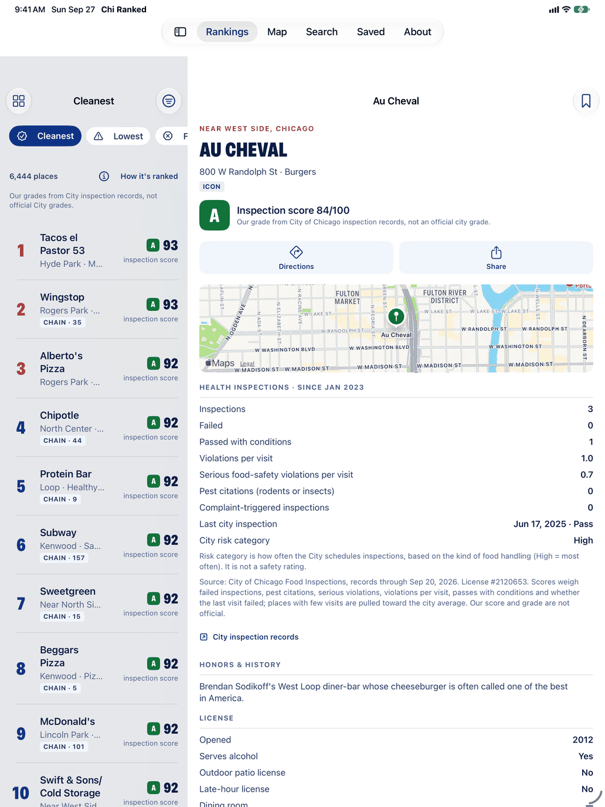

Free for iPhone and iPad
Chicago restaurant inspections, graded A to F
Chicago Restaurants: Ranked turns the City of Chicago’s food inspection records into a 0–100 score and a letter grade for nearly every restaurant in the city. See the cleanest records, recent failed inspections and pest citations, on a list or a map, before you pick a place to eat.
The grade is ours, calculated the same way for every place from public records. It is not an official City of Chicago grade.
From city records to a letter
- Failed inspections
- Pest citations
- Serious food-safety violations per visit
- Violations per visit
- Passes with conditions
- Whether the last visit failed
0–100 score, then a grade
- Chicago restaurants, out of 8,349 licensed food places
- 7,815
- City inspection records included through September 20, 2026
- Sep 20
- More restaurants on the map in 927 other Illinois towns
- 17,602
- No ads, no in-app purchases, no account
- $0
A restaurant health inspection app for Chicago
Chicago’s licensed restaurants, their inspection records, and the context that helps you decide where to eat.
Rankings, top and bottom
Boards for the cleanest records and the lowest inspection scores, failed latest inspections and pest citations, plus the most iconic spots, Michelin and James Beard honorees, the oldest and newest, the most valuable buildings and the highest published sales.
Filters that match how you eat
Narrow any board by side of the city, neighborhood, cuisine, grade, alcohol or a dining room, and hide chains. Airports, stadiums and cafeterias stay hidden unless you include them.
A map with grades on it
Pins colored by grade across the city. Tap Near Me on the home screen to see the closest places first; your location is used on your device only.
Search the whole city
Find a place by name, street, neighborhood, cuisine or zip code, or look up a town elsewhere in Illinois.
The whole record on one page
Grade and score, inspection counts, the last visit’s date and result, a link to the City’s official records, licenses (alcohol, patio, late hours, dining room), years open, building value and honors. Directions in Apple Maps, the website, and a share button.
Saved places, no account
Save the places you want to try or go back to. The list stays on your device.
How the grades work
Three steps from a city inspector’s visit to the letter on your screen.
The City inspects
Chicago Department of Public Health inspectors visit licensed food businesses on a schedule set by risk, and after complaints. Each inspection ends in pass, pass with conditions or fail. How Chicago inspections work.
We score the record
Every inspection since January 2023 counts: failures, pest citations, serious food-safety violations and violations per visit, passes with conditions, and whether the last visit failed. Few visits? The score is pulled toward the city average.
You get a letter
The 0–100 score becomes a grade from A to F. An F needs a failed inspection or a pest citation; an A needs no failed inspections. What the grades mean.
- A75–100no failures
- B66–74
- C57–65
- D47–56
- F0–46fail or pests
A place with no pass, pass with conditions or fail since January 2023 gets no grade. The Cleanest and Lowest inspection scores boards only include places with at least two inspections.
What the app looks like
Built for iPhone and iPad, in Chicago blue and red.

Home: every list in one place. 
Rankings: our A–F grades from City records. 
Map: pins colored by grade. 
Place page: the record behind the grade. Honors: Michelin and James Beard winners.

Ten ways to rank Chicago restaurants
Each board covers the whole city, or narrow it to a neighborhood, cuisine or grade.
Inspection boards
- Cleanest
- Lowest inspection scores
- Failed latest inspection
- Pest citations
Context boards
- Most iconic
- Michelin & James Beard
- Oldest and newest
- Most valuable building
- Highest published sales
Price
Free
No ads, no in-app purchases, no account. Nothing to unlock.
Private by design
The app collects no data at all. No analytics, no ads, no tracking and no sign-in. Location is optional and never leaves your device; it only puts you on the map and sorts places near you. Saved places stay on your device. Read the privacy policy.
Where the data comes from
Public records and verified facts, with each source named in the app.
- City of Chicago Food Inspections and Business Licenses. Inspection results and violations, license types, and when each place was first licensed, for 8,349 places across Chicago’s neighborhoods. Records through September 20, 2026. Food Inspections on the Chicago Data Portal.
- Cook County Assessor. An estimated market value of the property at each address, from the Assessor’s 2025 values as certified by the Board of Review, shown as building value. It is the whole property, not the restaurant business.
- Hand-verified honors and history. Michelin Guide Chicago 2025 stars, James Beard Foundation awards and America’s Classics, long-running local icons, opening years from verified histories, and published annual sales for about two dozen independents from Restaurant Business’s Top 100 Independents.
- Opening years. From City license records, which start in 2002, so an older place can show “2002 or earlier” unless its history has been verified.
- Overture Maps Foundation. Official websites, and the directory of restaurants in other Illinois towns (CDLA Permissive 2.0, Apache 2.0 and CC0).
Guides
Plain-English answers about Chicago’s restaurant inspections.
- How Chicago restaurant inspections workWho inspects, risk categories, how often places are inspected, and what pass, pass with conditions and fail mean.
- How to look up a Chicago restaurant inspectionFind any place’s record on the City’s data portal and read the results and violations.
- What our A–F grades meanExactly how the score is calculated, the grade cutoffs, and what a grade can’t tell you.
Questions
What people ask about Chicago restaurant inspections and the app.
Does Chicago give restaurants letter grades?
No. The City of Chicago records each inspection as pass, pass with conditions or fail, and publishes the results as open data. The A–F grade in this app is ours: it is calculated from those public records, the same way for every place, and it is not an official City of Chicago grade.
How often are Chicago restaurants inspected?
The Chicago Department of Public Health schedules routine inspections by risk category: risk 1 places are inspected twice a year, risk 2 places once a year and risk 3 places every other year. Complaints, license applications and reports of suspected food poisoning lead to extra inspections.
What does “pass with conditions” mean?
In the City’s own definitions, a pass with conditions means the inspector found critical or serious violations that were corrected during the inspection. A pass means none were found, and a fail means they could not be corrected during the inspection.
Does a failed inspection mean a restaurant was shut down?
Not necessarily. The City notes that a fail does not necessarily mean the establishment’s license is suspended. A re-inspection, when there is one, is recorded as its own inspection, so check what happened after the fail. The app shows the date and result of the most recent visit.
How is the A–F grade calculated?
Every pass, pass with conditions and fail since January 2023 counts. Points come off a 100-point score for failed inspections, pest citations, serious food-safety violations and violations per visit, passes with conditions, and a failed last visit. Places with few visits are pulled toward the city average. A score of 75 or more is an A. An F needs at least one failed inspection or pest citation, and an A needs no failed inspections.
How up to date is the inspection data?
The data is built into the app. This version includes City of Chicago inspection records through September 20, 2026. The City adds new inspections to its dataset every Friday, and newer records reach the app with app updates.
Is the app free, and does it track me?
It is free, with no ads, no in-app purchases and no account. The app collects no data. Location is optional: if you allow it, it is used only on your device to show you on the map and sort places near you. Saved places stay on your device too.
Does it cover the suburbs and the rest of Illinois?
Grades and inspection details cover the City of Chicago only, because they come from the City’s records. The app also has a map directory of 17,602 restaurants in 927 other Illinois towns, built from Overture Maps listings, with no inspection data. When we checked the same kind of listing against Chicago’s records, about 7 in 10 matched a restaurant the City inspects, so treat them as a starting point.
More answers on the support page.
Check the record before you order
Free on iPhone and iPad. No ads, no in-app purchases, no account.